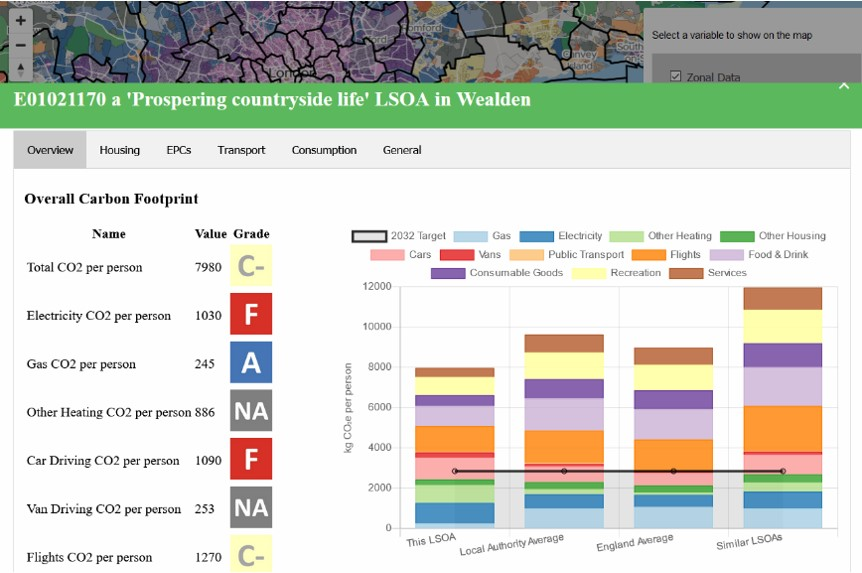

Welcome to the Place-Based Carbon Calculator
This tool is currently under development
Our carbon footprint is the total amount of greenhouse gasses (such as Carbon Dioxide) that we release into the atmosphere each year. Greenhouse gasses (GHG) contribute to climate change, which is harming people and ecosystems around the world. At the moment, almost everything we do contributes to our carbon footprint. But to avoid catastrophic climate change, we all need to reduce our carbon footprint to zero as quickly as possible.
While we all need to reduce our carbon footprint, we are not all starting from the same position. Some people have a much larger footprint than others. Some of this variation is due to individual choices, but some is due to circumstances. Everything from what kind of house we live in, to where we go to work affects our carbon footprint.
This tool takes a place-based approach to carbon footprints. That means that rather than thinking about individual decisions, we look at the structural issues that determine a community’s carbon footprint as a whole. For example, people may drive a long way to work because they do not have reliable public transport or good jobs in their local area.
This tool estimates the per-person carbon footprint for every Lower Super Output Area (LSOA) in England. LSOAs are small statistical areas with a population of about 1,500. As these are averages of areas, they may not reflect every individual person. But by highlighting the differences in carbon footprint across the country, this tool can help explain where our carbon footprint comes from and how we can reduce it.